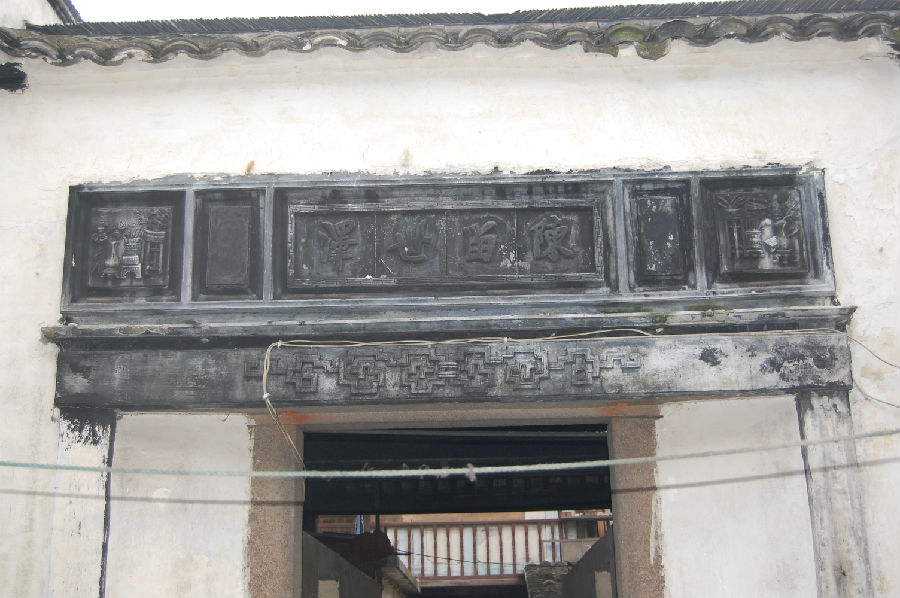
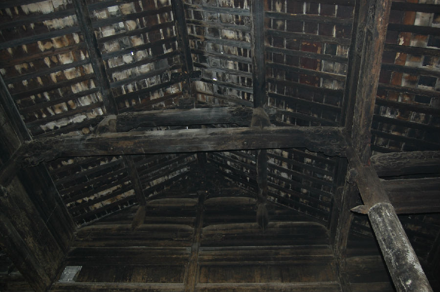

嘉兴市文物保护网 · 市级文物保护点 · 2020-11-03 · 原文


屠家祠堂位于嘉兴市秀洲区新塍镇西北大街26号。据周围居民介绍，祠堂建于太平天国失败后，原先作为屠家的宗祠，建国后土改分给无房户居住。祠堂坐北朝南，占地面积327平方米，通进深45米、通面阔7米。原为四进，现存前三进。一进为二层楼房，与二进间有天井。二进为一层，层高6.68米，与三进间有天井，天井北侧有砖雕门楼（上半部砖雕毁坏），上有行书“陈留世泽”四字。三进为二层是祠堂的主殿，后有院。该祠堂为硬山顶，两侧山墙立有马头墙，山墙用青砖砌筑，木梁架结构，抬梁式，有翻轩，地面铺设方形青砖。主殿用料粗大，梁架、门窗等处雕工精美，檐柱及下方柱础呈五角形。目前祠堂建筑在嘉兴发现较少，在同类型建筑中屠家祠堂就建筑规模、建筑格局保存状况来说都属精品，具有较高的历史和艺术价值。2009年公布为嘉兴市文物保护点。